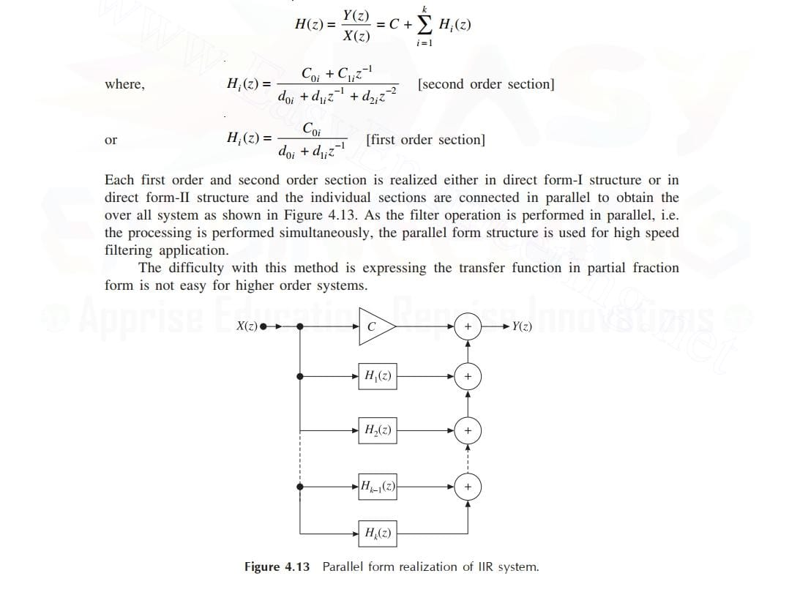

Parallel form structure is nothing, but the parallel connection of sub-transfer functions or sub-system functions, which is decomposed by using the partial fraction method. In parallel form realization, by partial fraction expansion, the transfer function H(z) is expressed as a sum of first and second order sections
